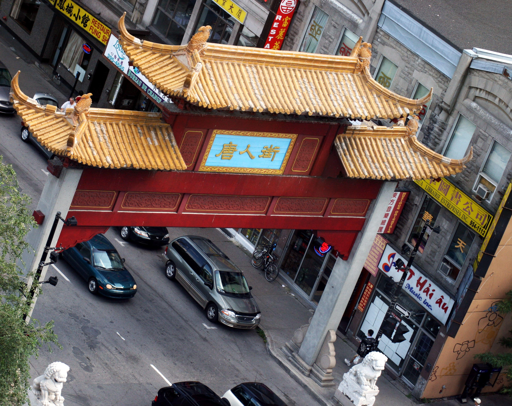

Montreal is an old, but a very modern city. The architectural sights provide ample opportunities for exploration. Modern buildings are situated right next to some of the oldest and most fascinating structures.
|  |
| MontrealChinagate |
Montreal City Hall is a five storied flashy building exclusively constructed to house the municipal administration. Built in the second empire style, it is one of the most impressive and spectacular buildings in old Montreal. It was constructed between 1872 and 1878 as per the designs suggested by architects Alexander Cowper Hutchison and Henri-Maurice Perrault.This building survived a major fire break in 1922 after which architect Louis Parant completely remodeled the same with more robust construction.
For over a century and a half, Montreal was the industrial and financial centre of Canada.[98] This legacy has left a variety of buildings including factories, elevators, warehouses, mills, and refineries, that today provide an invaluable insight into the city's history, especially in the downtown area and the Old Port area. There are 50 National Historic Sites of Canada, more than any other city.
In 2006 Montreal was named a UNESCO City of Design, only one of three design capitals of the world (the others being Berlin and Buenos Aires).This distinguished title recognizes Montreal's design community. Since 2005 the city has been home for the International Council of Graphic Design Associations (Icograda);the International Design Alliance (IDA).
| PlaceJacquesCartier |
The Montreal Museum of Fine Arts is an art museum in Montreal, Quebec, Canada. It is the city's largest museum and is amongst the most prominent in Canada. The museum is located on the historic Golden Square Mile stretch of Sherbrooke Street
 |
| MMFA |
Founded in 1860 as the Art Association of Montreal by a group of Montreal art collectors and patrons, the Montreal Museum of Fine Arts (MMFA) was one of the first museums in North America to build up an encyclopedic collection worthy of the name. It now numbers over 41,000 works from Antiquity to today, making it unique in Canada. It comprises paintings, sculptures, graphic arts, photographs and decorative art objects displayed in four pavilions: the Jean-Noël Desmarais Pavilion (international art), the Michal and Renata Hornstein Pavilion (world cultures), the Liliane and David M. Stewart Pavilion (decorative arts and design) and the Claire and Marc Bourgie Pavilion (Quebec and Canadian art).
The Montreal Museum of Fine Arts is a member of the International Group of Organizers of Large-scale Exhibitions,also known as the Bizot Group, a forum which allows the leaders of the largest museums in the world to exchange works and exhibitions. The Museum is affiliated with: CMA, CHIN, and Virtual Museum of Canada.
| Montreal Museum |
Montreal is a city of festivals, a tradition that peaks in early to mid summer but continues year-round.This is a list of festivals and parades in Montreal, a city in the province of Quebec, for any established festival, carnival, or parade in Montreal. This list includes festivals of diverse types, such as regional festivals, commerce festivals, fairs, food festivals, arts festivals, religious festivals, folk festivals, and recurring festivals on holidays.
| Mardi Gas Festival |
Montreal is known as a festival city, with major and minor festivals occurring non-stop throughout the summer, frequently with more than one major festival at the same time, with attendant street closures. Unofficially the party kicks off at the Montreal Grand Prix, and peters off when school starts again.
Fantasia International Film Festival (also known as Fantasia-fest, FanTasia, Fant-Asia) is a genre film festival that has been based mainly in Montreal since its founding in 1996. Regularly held in July of each year, it is valued by both hardcore genre film fans, and distributors, who take advantage of the eclectic line up to select foreign and domestic films for release across North America.
| BeerFestival |
Blue Metropolis is the name for the Montreal International Literary Festival. Also known as Blue Met, is the world's first multilingual literary festival and has been held annually in Montreal since April 1999. It was founded by Montreal writer Linda Leith. In early 2011, Leith departed and a new President was hired as well as a new Director of Programming.
Just for Laughs (French: Juste pour rire) is a comedy festival held each July in Montreal, Quebec, Canada. Founded in 1983, it is the largest international comedy festival in the world.